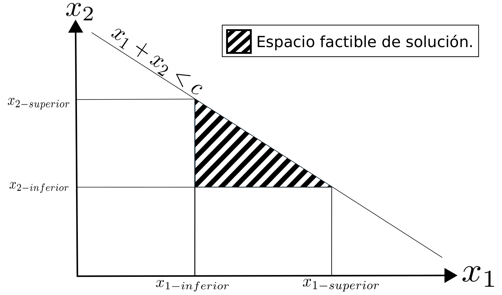
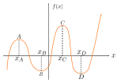
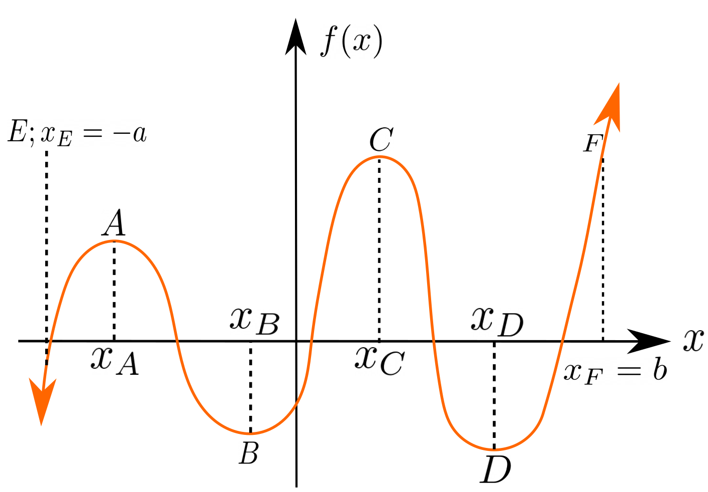
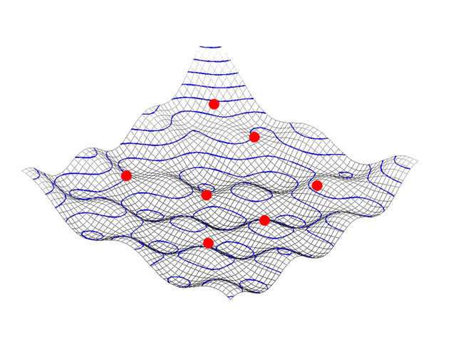
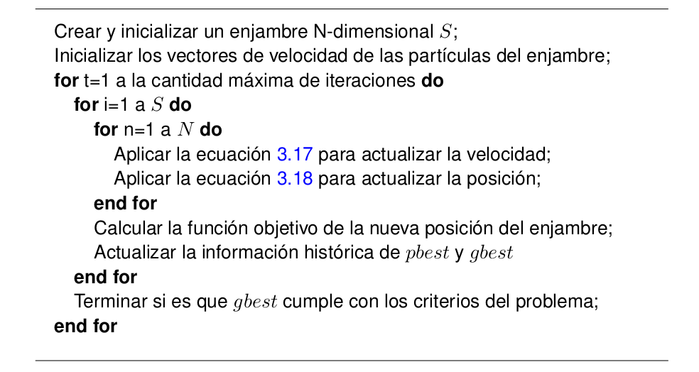
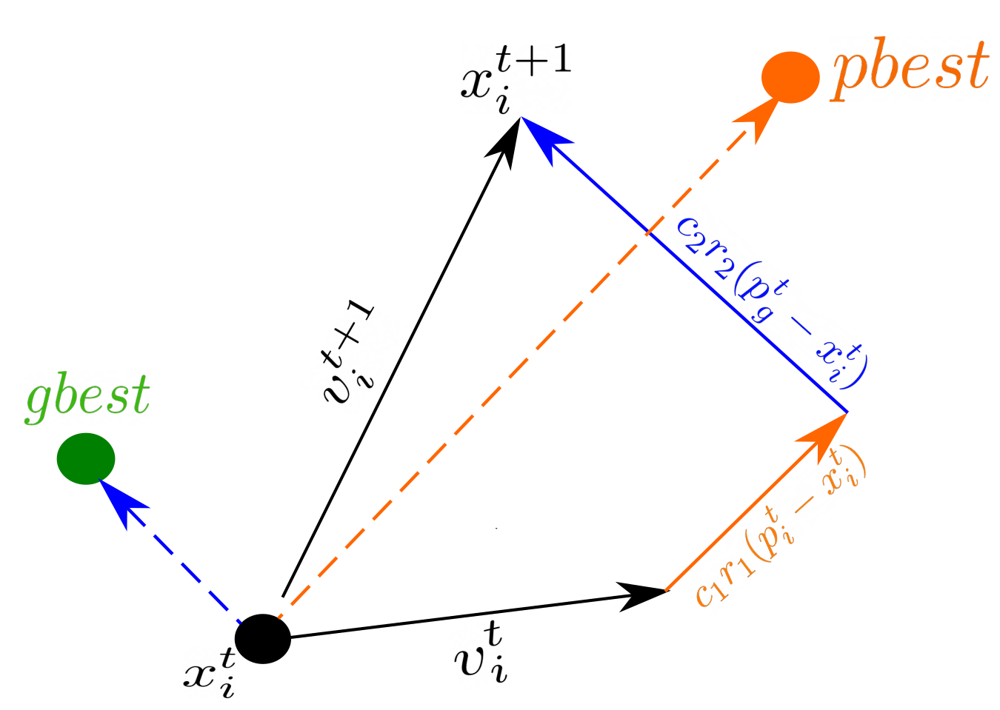

3. Optimización

Autor: Claudio Canales Donoso
Página: ccdonoso.github.io
Cursos: Mecánica Computacional - Diseño Computarizado
Universidad de Santiago de Chile
Fecha: 05/03/24
License: BSD 3 clause
Contenido : Optimización. - Fundamentos optimización - Optimización sin restricciones: - Método de Newton - Gradientes descendientes - Optimización por Enjambres de Partículas
3.1. Conceptos
3.1.1. Función objetivo
La función objetivo es lo que se desea optimizar. El objetivo puede ser maximizado o minimizado al escoger variables que cumplan con todas las restricciones del problema. La calidad de un conjunto de variables como posibles soluciones de un problema de optimización, es medido con el valor de la función objetivo para ese conjunto de parámetros. Ejem:
3.1.2. Variables de decisión
Las variables de decisión determinan el valor de la función objetivo. En cada problema de optimización se buscan las mejores variables de decisión que maximicen/minimicen el valor de la función objetivo. En algunos problemas de optimización las variables de decisión se encuentran restringidas por un límite superior y un límite inferior. Este tipo de variables de decisión forman un espacio continuo de decisión. Por ejemplo, escoger una proporción adecuada de químicos para fabricar un medicamento involucra variables de decisión en un espacio continuo, en el cual las proporciones pueden tomar cualquier valor entre [0,1]. Por otro lado, hay problemas de optimización en los que las variables de decisión son discretas. Las variables de decisión discretas son las que tienen valores específicos entre un límite superior y un límite inferior. Los números enteros son un ejemplo de variables discretas. Por ejemplo, la cantidad de vacunas que se pueden producir en un intervalo de tiempo está determinado por un valor entero. Los números binarios también son de tipo de variable de decisión discreta. Un caso típico es cuando se selecciona 1 para realizar una acción y 0 para no realizarla. Los problemas de optimización con variables de decisión continuas son llamados problemas continuos y aquellos definidos por variables de decisión discretas son llamados problemas discretos. También existen problemas de optimización que involucran variables de decisión discretas y continuas, estos se llamas problemas mixtos.
3.1.3. Solución de un problema de optimización
Cada función objetivo esta expresada en términos de las variables de decisión. Cuando solo hay una variable de decisión, el problema de optimización es denominado como unidimensional, mientras que los problemas de optimización que tienen dos o mas variables de decisión, son denominados como \(N\)-dimensionales. Un problema de optimización \(N\)-dimensional tiene soluciones expresadas en términos de uno o más de un conjunto de soluciones, en los que la solución tiene \(N\) variables de decisión.
3.1.4. Espacio Decisión
El conjunto de variables de decisión que satisfacen las restricciones del problema de optimización es denominado como espacio factible de decisión. En un problema \(N\)-dimensional cada posible solución es un vector de \(N\) variables. Cada elemento de este es una variable de decisión. Los algoritmos de optimización buscan, uno o varios puntos en el espacio de decisión, que optimizan la función objetivo. Por ejemplo, se puede definir un conjunto \(\mathbf{A}\) que contiene los elementos pertenecientes al espacio de decisión de un problema no restringido, definido por las variables de decisión N-dimensional \(\boldsymbol{x}\) \begin{equation} \mathbf{A}=\left \{\boldsymbol{x}\in \mathbb{R}^n \right \} \:. \end{equation}
Un problema de optimización puede tener dos tipos de restricciones. Aquellas que limitan de forma directa el posible valor de la variable de decisión como, por ejemplo, que una variable de decisión sea de valor real y positiva, es decir \(x>0\), y aquellas que restringen el problema de optimización de manera implícita como \(x_1+x_2<c\). La finalidad del problema de optimización es encontrar una solución óptima en el espacio factible. En la figura 1, se puede observar un problema restringido en un espacio de decisión bi-dimensional. El espacio de todas las soluciones factibles constituyen el espacio factible de decisión. Evidentemente, la solución óptima tiene que estar en el espacio factible. Otra forma de clasificar los tipos de restricciones es considerando restricciones de igualdad o restricciones de inequidad. Se puede definir un vector \(\mathbf{h}\) que representa \(p\) restricciones de igualdad \begin{equation} h_j(\boldsymbol{x})=0 , j=1..p \: \quad (1). \label{eq:r_e} \end{equation} De forma similar, se define un vector \(\mathbf{g}\) de restricción de inequidad \begin{equation} g_i(\boldsymbol{x})\leq0 , i=1..m \: \quad (2).. \label{eq:r_d} \end{equation}

Figura 1
3.1.5. Óptimo Local y Global
Se ha establecido que un problema de optimización bien definido tiene un espacio de decisión bien definido. Cada punto del espacio de decisión define un valor de la función objetivo. La región de soluciones factibles constituye el conjunto \(\mathbf{A}\) y se escribe en términos de las restricciones 1 , 2 y el vector de las variables decisión \(\boldsymbol{x}\)
\begin{equation} \mathbf{A}=\left \{\boldsymbol{x}| h_j(\boldsymbol{x})=0 , j=1..p ; g_i(\boldsymbol{x})<=0 , i=1..m\right \} \:. \end{equation}
En una función pueden existir dos tipos de óptimos: óptimos locales y óptimos globales. Para entender la diferencia entre estos se puede considerar una función \(f(x)\) de una variable, mostrada en la figura 2. En esta figura, donde \(x\) esta sin restringir \((-\infty\leq x \leq \infty)\), los puntos \(x_B\) y \(x_D\) son mínimos locales, ya que son los valores más pequeños en sus cercanías. Al desplazarse a la izquierda o derecha de esos puntos, la función crece. Por lo tanto, estos puntos son llamados mínimos locales, por que son los mejores valores en sus cercanías.
Similarmente, \(x_A\) y \(x_C\) son máximos locales para \(f(x)\). Para determinar si un óptimo es global, se necesita examinar todo el dominio de la función y determinar su posición. De acuerdo a estas definiciones, no existe un óptimo global para la función 2, ya que el dominio de la función \(f(x)\) no tiene un límite superior o inferior. En cambio, si es que la función objetivo se restringe entre \(-a\) y \(b\), como en la figura 3, entonces el punto \(x_E\) sería el mínimo global y \(x_F\) el máximo global. Estos dos puntos tienen restricciones activas, mientras que los puntos \(x_A,x_B,x_C\), y \(x_D\) son no restringidos.

Figura 2

Figura 3
Un óptimo global, es aquel punto perteneciente al espacio factible con el mejor valor de la función objetivo en todo el espacio de soluciones factibles.
Un óptimo local es aquel punto perteneciente al espacio factible que presenta el mejor valor de la función objetivo en su vecindad.
Con estos conceptos descritos, se puede dar una definición más precisa de lo que es un óptimo local y un óptimo global. Estos definen con base en la minimización, ya que un problema de maximización puede convertirse en uno de minimización multiplicando la función objetivo por \(-1\).
3.1.5.1. Mínimo Global
Una función \(f(\boldsymbol{x})\) de \(n\) variables tiene un mínimo global en \(\boldsymbol{x}^*\) si al ser evaluada en \(\boldsymbol{x}^*\) es menor o igual que cualquier otro punto de la función evaluada en \(\boldsymbol{x}\), perteneciente al conjunto del espacio factible \(\mathbf{A}\). Es decir
\begin{equation} f(\boldsymbol{x}^*)\leq f(\boldsymbol{x}) \:. \label{eq:global_in} \end{equation}
Si se que cumple la inequidad de forma estricta para todo \(\boldsymbol{x}\) perteneciente al conjunto factible soluciones \(\mathbf{A}\), entonces \(\boldsymbol{x}^*\) es un mínimo global fuerte y si no fuese así, se llamaría un mínimo global débil.
3.1.5.2. Mínimo Local
Una función \(f(\boldsymbol{x})\) de \(n\) variables tiene un mínimo local en \(\boldsymbol{x}^*\), si la inequidad 4 se cumple para todo \(\boldsymbol{x}\) en una pequeña vecindad \(N\) del punto \(\boldsymbol{x}^*\) perteneciente al conjunto del espacio factible \(\mathbf{A}\). Si la inequidad es estricta, entonces el óptimo local se llama óptimo local fuerte, en caso contrario, se denomina óptimo local débil.
La vecindad \(N\) del punto \(\boldsymbol{x}^*\) es definida como un conjunto de puntos tales que
\begin{equation} N=\left \{\boldsymbol{x}| \boldsymbol{x}\in\mathbf{A} ; \left \|\boldsymbol{x}-\boldsymbol{x}^* \right \|< \delta \right \} \:. (4) \end{equation}
Este conjunto esta definido por un pequeño \(\delta>0\). Geométricamente, consiste en una pequeña región del espacio factible.
Optimización sin restricciones
Un punto critico de una función \(f\) es un punto \(\mathbf{x}\) en el que se cumple que \(\triangledown f(\mathbf{x})=\mathbf{0}\). Podemos clasificar un punto critico \(\mathbf{x}\) de \(f:\mathbb{R}^n \rightarrow \mathbb{R}\) como un maximo, un minimo o un punto silla al observar el Hessiano \(Hf(\mathbf{x}) = \triangledown^2f(\mathbf{x})\). Este es una versión multivariable de la segunda derivada y es posible utilizar información de esta matriz en el punto crítico para clasificar que tipo de punto critico tiene una función. Si esta matriz es:
Definida positiva, entonces \(\mathbf{x}\) es un mínimo estricto.
Definida negativa, entonces \(\mathbf{x}\) es un máximo estricto.
Positiva/ Negativa semidefinida, entonces \(\mathbf{x}\) no es un mínimo/máximo estricto.
Indefinida, entonces es un punto de estancamiento.
Excelente, entonces con los valores propios de la matriz Hessiana es posible saber si es que un punto es un mínimo, máximo o un punto de estancamiento.
Si todos los valores propios son positivos, entonces la matriz es definida positiva.
Si todos los valores propios son negativos, entonces la matriz es definida negativa.
Si alguno de los valores propios es cero, entonces la matriz es semidefinida.
Si los valores propios tiene signos cambiados, entonces es un punto de estancamiento.
3.2. Optimización con el método de Newton y Gradientes Descendientes.
Estos métodos permiten optimizar funciones convexas sin restricciones, por ejemplo:
Se desea encontrar un Óptimo Local que cumpla con \(\triangledown f(\mathbf{x})=\mathbf{0}\). Si se dan cuenta, se puede encontrar un punto que cumpla con la condición de la primera derivada al resolver un sistemas de ecuaciones no lineales. El jacobiano del vector de funciones sera igual al Hessiano \(Hf(\mathbf{x}) = \triangledown^2f(\mathbf{x})\) y utilizando estas ecuaciones es posible utilizar el método de Newton para resolver el problema de optimización de forma iterativa, como:
Tambien se puede entender como:
En este caso, por cada iteración, se esta minimizando una serie de Taylor de segundo orden dado por:
3.2.1. Gradientes descendientes
El método de gradientes descendientes itera utilizando solo el gradiente:
En este caso se utiliza la siguiente aproximación para minimizar la función:
[2]:
from numba import jit
import numpy as np
import time
import matplotlib.pyplot as plt
x = np.arange(100).reshape(10, 10)
@jit(nopython=True)
def go_fast(a): # Function is compiled and runs in machine code
trace = 0.0
for i in range(a.shape[0]):
trace += np.tanh(a[i, i])
return a + trace
# DO NOT REPORT THIS... COMPILATION TIME IS INCLUDED IN THE EXECUTION TIME!
start = time.time()
go_fast(x)
end = time.time()
print("Elapsed (with compilation) = %s" % (end - start))
# NOW THE FUNCTION IS COMPILED, RE-TIME IT EXECUTING FROM CACHE
start = time.time()
go_fast(x)
end = time.time()
print("Elapsed (after compilation) = %s" % (end - start))
Elapsed (with compilation) = 0.13591408729553223
Elapsed (after compilation) = 3.790855407714844e-05
3.2.2. Resolver el siguiente problema de Optimización:
Considerar una inicialización \(\mathbf{x}=(20,20)\).
[25]:
@jit
def fmin(x,y):
return (10.*x**2 + y**2 )/2. + 5*np.log(1. + np.exp( -x-y))
delta = 0.1
x = np.arange(-20., 20., delta)
y = np.arange(-20., 20., delta)
X, Y = np.meshgrid(x, y)
Z = fmin(X,Y)
plt.figure(figsize=(12,8))
plt.xlim(-20,20)
plt.ylim(-20,20)
plt.contour(x,y,z, levels = 20, colors='black')
# Programar Gradiente descendiente.
@jit(nopython=True,parallel=True)
def grad_num(f,x,y,h=1e-8):
grad = np.zeros(2)
grad[0] = (f(x+h,y) - f(x-h,y))/(2.*h)
grad[1] = (f(x,y+h) - f(x,y-h))/(2.*h)
return grad
x = 20.*np.ones(2)
lr = 0.01
for i in range(400):
x = x - lr * grad_num(fmin,x[0],x[1])
plt.plot(x[0],x[1],'r.')
#-----------------------------------------
[29]:
plt.figure(figsize=(12,8))
plt.xlim(-20,20)
plt.ylim(-20,20)
plt.contour(X,Y,Z, levels = 20, colors='black')
# Programar el método de Newton.
def hessian(f,x,y,h=1e-5):
""" Numeric Hessian
df2/dx2 df2/dxdy
df2/dydx df2/dy2
"""
H = np.zeros((2,2))
H[0,0] = (f(x+h,y)-2.*f(x,y)+f(x-h,y))/(h**2.)
H[1,1] = (f(x,y+h)-2.*f(x,y)+f(x,y-h))/(h**2.)
H[0,1] = (f(x+h,y+h) - f(x+h,y-h) - f(x-h,y+h) + f(x-h,y-h))/(4*h**2.)
H[1,0] = H[0,1]
return H
x = 20.*np.ones(2)
lr = 0.01
sol = [ x ]
for i in range(20):
inv_hessian = np.linalg.inv(hessian(fmin,x[0],x[1]))
grad = grad_num(fmin,x[0],x[1])
x = x - np.dot(inv_hessian,grad)
sol.append(x)
sol = np.array(sol)
plt.plot(sol[:,0],sol[:,1],'b-')
x
# -------------------------------------------------------------------
[29]:
array([0.11246718, 1.12467184])
3.3. Optimización por enjambre de Partículas
La optimización por Enjambre de Partículas, Particle Swarm Optimization (PSO), es un algoritmo de optimización que está inspirado en el comportamiento de bandadas y enjambres, para solucionar problemas no lineales, no convexos o problemas de combinatoria. Este método fue introducido el año 1995 por James Kennedy y Russel Ebehart [1].

Kennedy y Eberhart [1] desarrollaron el modelo PSO para optimizar funciones. En PSO, las soluciones son obtenidas a través de una búsqueda aleatoria y la inteligencia del enjambre. Esta búsqueda es realizada a través de un conjunto aleatorio de posibles soluciones, este conjunto es conocido como enjambre y cada solución potencial es conocida como partícula.
En PSO, las partículas son influenciadas por dos tipos de aprendizaje. Cada partícula aprende de otra partícula y de su experiencia previa al moverse. El aprendizaje a partir de otros es generalmente referido como aprendizaje social, mientras que el aprendizaje basado en las experiencias propias es denominado como aprendizaje cognitivo. Como resultado del aprendizaje social, las partículas almacenan en su memoria la mejor solución visitada por el enjambre, denominada como gbest. Como resultado del aprendizaje cognitivo, la partícula almacena en su memoria la mejor solución visitada por ella misma, denominada como pbest.
El cambio de la dirección y de la magnitud de cualquier partícula es decidido por un factor denominado como velocidad. Este es el cambio de la posición respecto al tiempo. En un marco referente a PSO el tiempo es definido por las iteraciones. De esta manera, para PSO la velocidad puede ser definida como la tasa de cambio de la posición respecto a las iteraciones. Como el número de estas crece unitariamente, la dimensión de la velocidad \(v\) y el de la posición \(x\) es la misma.
Para un espacio de búsqueda N-dimensional, la \(i\)-ésima partícula de un enjambre en un paso de tiempo \(t\) es representada por un vector N-dimensional, \(x_i^t=(x_{i1}^t,x_{i2}^t,...,x_{iN}^t)^T\) y su velocidad es representada por un otro vector N-dimensional \(v_i^t=(v_{i1}^t,v_{i2}^t,...,v_{iN}^t)^T\). A su vez, la mejor posición visitada por una partícula es denotada como \(p_i^t=(p_{i1}^t,p_{i2}^t,...,p_{iN}^t)^T\). El índice \(g\) indica cual es la mejor partícula del enjambre. La velocidad y la posición de una partícula pueden ser actualizadas utilizando respectivamente las ecuaciones (4) y la ecuación (5).
\begin{equation} v_{in}^{t+1}=v_{in}^{t}+c_1r_1(p_{in}^t-x_{in}^t)+c_2r_2(p_{gn}^t-x_{id}^t) \quad (4) \label{eq3:vpso} \end{equation}
\begin{equation} x_{in}^{t+1}=x_{in}^{t}+v_{in}^{t+1}, \quad (5) \label{eq3:xpso} \end{equation}
donde \(n=1,2,...,N\) representa la dimensión, \(i=1,2,...,S\) representan el índice de la partícula, \(S\) es el tamaño del enjambre y \(c_1\) y \(c_2\) son constantes denominadas como parámetros cognitivo o social, respectivamente, o simplemente coeficientes de aceleración. De igual forma, \(r_1\) y \(r_2\) son números aleatorios en el rango \([0,1]\) con distribución uniforme. Se puede observar de las ecuaciones 4 y 5 que cada dimensión es actualizada independiente de las otras. La única relación entre las dimensiones está dada por la función objetivo a través de \(pbest\) y \(gbest\). Las ecuaciones 4 y 5 definen la versión básica de PSO. Un procedimiento algorítmico para PSO es definido en la siguiente tabla.

La ecuaciones 3.14 y 3.15 son las ecuaciones 4 y 5, respectivamente.
3.3.1. Ecuaciones de posición y velocidad
El lado derecho de la expresión 4 contiene tres términos aditivos, que se pueden interpretar como:
La velocidad anterior \(v\) puede ser vista como el momento de la partícula. Este término previene un cambio drástico de la velocidad de la partícula.
El segundo término es conocido como la componente cognitiva o egoísta. Este término atrae a la partícula a la mejor posición en la que ella ha estado. De esta manera, durante el proceso de búsqueda, la partícula recuerda su posición y evita deambular. Es importante notar que \((p_{in}^t-x_{in}^t)\) es un vector que apunta hacia la mejor posición de la partícula. Es importante mantener el orden, ya que, en caso contrario la partícula seria repelida de esta posición.
El tercer término es llamado componente social y es responsable de compartir la información a todo el enjambre. Debido a este término, cada partícula es atraída a la mejor posición del enjambre. El término \((p_{gn}^t-x_{id}^t)\) apunta hacia la mejor posición del enjambre.

Es claro que los términos \(c_1\) y \(c_2\) restringen cuanto se va a desplazar la partícula, en la dirección de la mejor posición de la partícula y la mejor posición del enjambre, respectivamente. Al controlar estos parámetros se puede controlar la velocidad o éxito de la convergencia.
La figura representa geométricamente el movimiento de las partículas en un plano 2D. En todo paso de tiempo de PSO el enjambre sigue la posición de \(gbest\) y \(pbest\) y por ende, cumple con el principio de calidad. Como la partícula se mueve aleatoriamente hacia \(gbest\) y \(pbest\), se cumple el principio de diversidad. El principio de estabilidad se justifica por que el enjambre no se mueve aleatoriamente, solo las partículas. En enjambre cambia su comportamiento cuando \(gbest\) cambia, por lo tanto, se adhiere al principio de adaptabilidad.
3.4. Bibliografía
[1] KENNEDY, James y EBERHART, Russell. Particle swarm optimization. En: Procee- dings of ICNN’95-International Conference on Neural Networks. 1995, vol. 4, págs. 1942-1948.